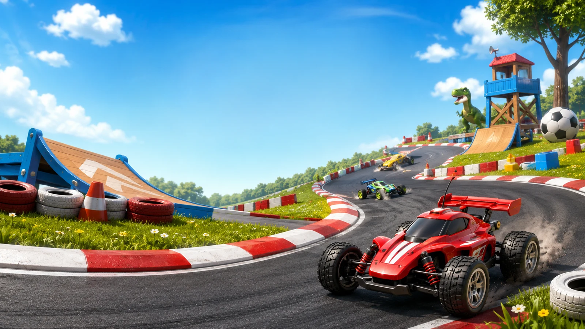

Make your way to the top
Win campaign races to unlock tracks and cars. Build your garage, earn trophies and chase lap records with your own player profile.

SIX CHILDREN PRODUCTIONS
The whole world is your racetrack.
Grab a controller. Pick your racer. Bring your rivals.
WINDOWS PC • SINGLE PLAYER + LOCAL MULTIPLAYER
Small scale.
Serious competition.
01 / LIGHTS OUT
Take the jump. Chase the pack.
Watch the cinematic opening.
02 / A WORLD OF CIRCUITS
Race through rooms, wild landscapes and space.
Every finish line is the start of something new.
Find your racing line through a world of greenery.
Take the competition beyond Earth.
The crowd is ready. Your rivals are waiting.
03 / YOUR RACE. YOUR RULES.
Win campaign races to unlock tracks and cars. Build your garage, earn trophies and chase lap records with your own player profile.
Bring up to four players together for local split-screen racing. Choose your car and lap count, with equal multiplayer stats to keep it fair.
Grab nitro, fire homing missiles and drop bombs. Pick Beginner, Normal, Hard or Ultra Hard to find your kind of competition.
04 / TAKE YOUR PLACE ON THE GRID
Tiny Turbo Racers for Windows PC.
Windows downloadWindows 64-bit · ZIP download · 1.91 GiB
Current playtest. The game launches as TurboToyRacers.exe.
Save the Windows ZIP and choose “Extract All.” Keep the game and its data folder together.
Use a controller for each local multiplayer racer. Controls can be remapped in the game.
Open TurboToyRacers.exe. Press A or Space to skip the opening, then choose Campaign, Single Race or Multiplayer.
Windows 64-bit download · Local split-screen on one computer.
This is a downloadable PC game; it does not run in your phone’s browser.